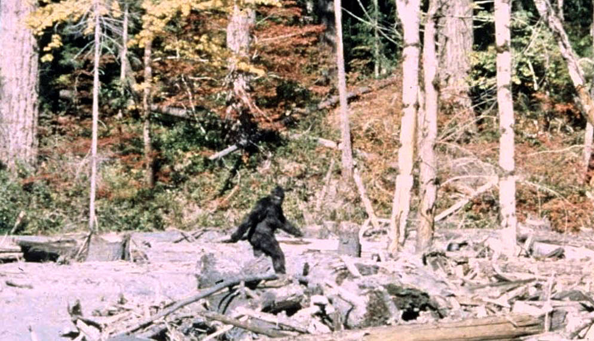

The Cryptid of North American
Via Wikipedia — "Bigfoot"; image license per its Wikimedia Commons file page
You're hiking alone in the Pacific Northwest.
You're hiking alone in the Pacific Northwest. The trail is empty. The forest is cathedral-quiet. Then you smell it — a musk so strong it's almost visible, wet fur and earth and something ancient. You see the prints before you see the thing that made them: footprints, bare, human-shaped, sixteen inches long, pressed deep into the mud. They're still filling with water. They're fresh. You look up. There's something standing between the trees, seven feet tall, covered in dark hair, watching you with an expression that is not animal. It is not even human. It is something in between, and you are on its trail, in its forest, and it has decided not to run.
Bigfoot (also known as Sasquatch) is the most famous cryptid in North America — a large, hairy, bipedal humanoid said to inhabit the forests of the Pacific Northwest and, increasingly, other remote regions across the continent. The name 'Sasquatch' comes from the Halkomelem word 'sásq'ets,' used by the Coast Salish peoples of British Columbia to describe wild, hairy 'giants' that lived in the mountains. Bigfoot is described as standing 6 to 10 feet tall, covered in dark brown or reddish hair, with a pronounced brow ridge, a flat nose, and a distinctly un-ape-like posture — more human than gorilla. Its most famous physical evidence is the footprint: oversized, human-like in shape (five toes, an arch), measuring 15 to 24 inches long, preserved in plaster casts and photographs since the late 1950s.
The modern Bigfoot phenomenon began in 1958, when a California construction crew discovered massive footprints at a worksite in Bluff Creek. The story was picked up by the Humboldt Times, which coined the name 'Bigfoot.' The most famous piece of Bigfoot evidence — the Patterson-Gimlin film (1967) — shows a large, hairy bipedal figure striding across a sandbar at Bluff Creek. The film has been analyzed frame-by-frame for over 50 years and remains controversial: some experts argue it shows a living creature with a gait impossible for a human in a suit to replicate; others argue it is clearly a man in a fur costume. No body, bones, or definitive DNA evidence has ever been found. Bigfoot represents the ultimate cryptozoological dream: a large, undiscovered primate living in the forests of the most technologically advanced nation on Earth. Whether hoax, misidentification, or genuine mystery, Bigfoot is a permanent fixture of American folklore.
Bigfoot legends predate European contact. Numerous indigenous nations of North America have traditions of wild, hairy 'giants' or 'wild men' living in the forests and mountains — the Salish 'Sasquatch,' the Hoopa 'Omah,' the Cherokee 'Tsul Kalu,' the Tlingit 'Kushtaka,' and many others. These beings range from purely spiritual entities to physical creatures to beings that blur the line between the two. The modern 'Bigfoot' phenomenon began in 1958 with the Bluff Creek footprints in northern California, but the creature's cultural resonance exploded with the 1967 Patterson-Gimlin film. Since then, tens of thousands of sightings have been reported across the United States and Canada, from Florida (the 'Skunk Ape') to Ohio to Alaska.
A large, muscular, bipedal primate standing 6-10 feet tall, covered in dark brown, black, or sometimes reddish hair. The face is a mix of human and ape features: a flat nose, a pronounced brow ridge, a sloping forehead, and a jaw that is neither fully human nor fully simian. The eyes are described as intelligent, calm, and curious — many witnesses report a powerful sense of being 'looked at' by an intelligence they cannot name. The arms are long, reaching almost to the knees. The creature is broad-chested and massively built, weighing an estimated 500-800 pounds. It leaves footprints 15-24 inches long, with five toes and a human-like arch — this footprint is the single most consistent piece of physical evidence across thousands of reports. In motion, Bigfoot walks with a long, smooth stride — non-bounding, deliberate, almost gliding. The Patterson-Gimlin film shows a creature whose leg and hip motion has been analyzed by biomechanics experts and found difficult to replicate by a human in a suit.
Tremendous physical strength — Bigfoot is reported to uproot trees, throw large rocks, and tear apart structures. Extreme stealth — despite its size, it can move silently through dense forest and disappear without a trace. An ability to avoid cameras, traps, and human detection across decades of intensive searching — impossible for a known animal, which fuels both the 'supernatural entity' and the 'doesn't exist' theories. A powerful, distinctive odor described as 'skunk-like' or 'musky,' detectable from hundreds of feet away. Vocalizations including howls, screams, whoops, and 'wood knocks' (loud percussive sounds made by striking trees). Some reports describe Bigfoot as capable of infrasound — low-frequency sound that causes feelings of fear, nausea, or being watched. Its feet are adapted for silent movement over varied terrain.
Bigfoot is shy, reclusive, and non-aggressive. The vast majority of encounters consist of a brief visual sighting followed by the creature retreating into the forest. It is typically solitary, though some reports describe family groups (adults with juveniles). It is most active at dawn and dusk and during the night. It apparently avoids human contact and will leave an area if it detects human presence. Its diet is presumed to be omnivorous — berries, plants, small animals, possibly deer or elk. It leaves behind 'nests' — large, woven structures of branches and vegetation used for sleeping. It communicates with 'wood knocks' — loud, resonant strikes on trees that carry long distances through the forest. In some reports, it throws rocks or branches as a warning display rather than a direct attack.
Bigfoot has avoided all attempts at capture, filming (beyond the Patterson-Gimlin film and alleged short clips), and definitive DNA recovery. This elusiveness is impossible for a breeding population of large mammals, according to critics, which makes Bigfoot's existence scientifically implausible. The creature may be attracted to certain foods (apples, peanut butter, deer bait) and can theoretically be lured. It avoids humans, so human presence deters it. Night vision, thermal imaging, and camera traps have not produced definitive evidence, making Bigfoot 'weak' against modern surveillance — though believers argue Bigfoot actively avoids these devices. If Bigfoot is a physical animal, it is vulnerable to the same habitat loss and human encroachment that threaten all large species.
◉ The name 'Sasquatch' comes from the Halkomelem word 'sásq'ets,' meaning 'wild man' or 'hairy man' in the Salishan languages of British Columbia.
◉ The Patterson-Gimlin film (1967) is the most analyzed piece of cryptozoological evidence in history, with biomechanics experts still disputing whether a human could replicate the gait in a suit.
◉ The BFRO (Bigfoot Field Researchers Organization) maintains a database of over 75,000 reported Bigfoot sightings and encounters.
◉ Bob Gimlin, the man who filmed the Patterson footage, has consistently maintained for 55+ years that what he filmed was a real creature, not a hoax — and has passed multiple polygraph tests.
◉ DNA testing on supposed Bigfoot hair and tissue samples has consistently returned results of known animals: bear, deer, coyote, or in one famous case, a 'hybrid human' that was later debunked.
You're at 18,000 feet, in the Death Zone, where the air is too thin to sustain human life for long. The snow s…
AlgonquianWendigoThe winter has lasted four months, and you've run out of food. Your family is too weak to move. That's when yo…
AmericanMothmanYou're driving on Route 62 outside Point Pleasant at midnight. Your headlights catch something standing in the…
Latin AmericanChupacabraYou wake up to silence — no birds, no dogs, nothing. You walk outside and find your goats dead in their pen. N…
Beings of the same nature, imagined by other peoples.
The Beast of Bodmin Moor is Britain's most famous 'Alien Big Cat' (ABC) -- a large, predatory feline reported …
Aboriginal Australian / Australian settler folklore (Queensland, New South Wales, and other regions)YowieThe Yowie is Australia's Bigfoot -- a large, hairy hominid reported from the continent's remote bushland, outb…
American (Dover, Massachusetts)Dover DemonThe Dover Demon is one of cryptozoology's most unusual and briefly-seen creatures. Over two nights in April 19…
KoreanJangsan-beomThe jangsan-beom is Korea's mimic: a huge, white-furred tiger-like beast said to haunt Jangsan Mountain above …
Bigfoot is the quintessential American cryptid, capturing the national imagination about wilderness, mystery, and the possibility of the undiscovered. He represents the frontier spirit — the idea that even in a mapped, satellite-photographed, GPS-navigated country, something large and unknown could still be hiding. Bigfoot has spawned an entire subculture: Bigfoot hunters, research organizations (the BFRO — Bigfoot Field Researchers Organization), television shows ('Finding Bigfoot'), conventions, and a multi-million-dollar merchandise industry. He is a beloved pop culture figure, appearing as everything from a truck commercial mascot to a Harry and the Hendersons gentle giant. For cryptozoologists, proving Bigfoot's existence would be the holy grail — evidence that large terrestrial species can still evade scientific discovery.
Even if Bigfoot never leaves a single hair on a lab bench, it already stalks the North American imagination—a towering, shaggy silhouette at the edge of the campfire light, where wilderness, colonial history, and the hunger for mystery all converge.
Bigfoot
“Bigfoot” is a modern English compound, apparently popularized in 1958 newspaper coverage of large footprints reported near Bluff Creek, California. “Sasquatch” is derived from a Halkomelem (Coast Salish) term often reconstructed as sasq’ets or similar forms, referring to a powerful, hairy, humanlike being of the forest; the spelling “Sasquatch” was introduced by journalist J. W. Burns in the early 20th century and became standard in English cryptozoological discourse. “Skookum” is a Chinook Jargon word meaning strong, powerful, or monstrous, later applied to a large, wild creature in some Pacific Northwest contexts.
The figure of Bigfoot/Sasquatch sits at the intersection of Indigenous North American traditions about wild, hairy beings and a largely settler-colonial, Anglophone cryptozoological culture. Indigenous communities of the Pacific Northwest (e.g., Coast Salish, Nuu-chah-nulth, Kwakwaka’wakw) maintain stories of forest beings that predate and often differ from the modern Bigfoot legend; these narratives are part of living cultural and spiritual systems and cannot be reduced to cryptid lore. The contemporary “Bigfoot” of popular media and cryptozoology is primarily owned and circulated by North American popular culture, tourism, and fandom, often drawing—sometimes problematically—on Indigenous motifs.
Bigfoot is variously identified as: (1) an undiscovered North American primate or hominid (cryptozoological claim); (2) a misidentified bear, human, or other known animal; (3) a spiritual or mythic being in Indigenous cosmologies; (4) a modern folklore figure and cultural symbol rather than a biological entity. Skeptical researchers and mainstream zoology overwhelmingly reject the biological existence of Bigfoot, attributing reports to hoaxes, misidentifications, and narrative contagion. Cryptozoologists and some witnesses argue for a real, physical creature. Within Indigenous contexts, some beings translated as “Sasquatch” are not understood as mere animals but as powerful persons or spirits, making direct identification with the cryptid contested and culturally sensitive.
Attested descriptions from witness reports and folklore portray Bigfoot as a large, bipedal, hair-covered figure, typically between 6 and 10 feet tall, though some accounts claim up to 15 feet. The body is often described as massively built, with broad shoulders, long arms, and a conical or domed head lacking a prominent neck. Hair color ranges from dark brown and black to reddish or gray, sometimes varying by region. Witnesses frequently mention a strong, unpleasant odor, sometimes likened to rotting vegetation or wet animal. Footprints—central to the creature’s identity—are reported as 14–24 inches long, with humanlike shape but exaggerated size, occasionally showing dermal ridges in casts produced by enthusiasts. These traits are attested in newspaper reports, BFRO narratives, and folklore surveys; exact dimensions and features vary, and some casts and photographs have been exposed as hoaxes.
In popular iconography, Bigfoot is represented as a silhouette of a striding, ape-like figure, often modeled on a frame from the Patterson–Gimlin film. This silhouette appears on road signs, logos, tourist merchandise, and memes. Regional variants use localized names (e.g., Wood Booger, Fouke Monster) but retain the hairy giant motif. In Indigenous art and ceremonial regalia, beings sometimes translated as “sasquatch” or wildmen may be depicted with exaggerated hair, large eyes, and fearsome expressions, though these images belong to specific cultural symbol systems and are not simply cryptid illustrations. Bigfoot has become a symbol of wilderness, mystery, and resistance to scientific closure, frequently used in branding for outdoor gear, beer, and local festivals.
Attested behavior in reports includes nocturnal or crepuscular activity, avoidance of humans, and rapid retreat when encountered. Witnesses describe Bigfoot as shy, elusive, and wary, yet capable of intimidating displays such as rock throwing, tree knocking, vocalizations (howls, screams, whistles), and stalking at the edge of campsites. Some Indigenous narratives portray forest beings analogous to Bigfoot as morally instructive figures—punishing disrespect, kidnapping or frightening those who break taboos, or serving as cautionary examples of wildness. Cryptozoological accounts sometimes attribute curiosity, intelligence, and even protective behavior to Bigfoot, while skeptical analyses emphasize that these traits reflect human projection and narrative conventions. Personality traits are thus reconstructed from stories rather than directly observed, and they vary widely.
Bigfoot is most commonly associated with forested, mountainous, and heavily wooded regions of North America, especially the Pacific Northwest (Washington, Oregon, British Columbia, northern California). Regional variants extend to the Appalachian Mountains, the Ozarks, the Great Lakes region, and parts of the South and Midwest. Habitats are typically described as remote, rugged, and sparsely populated, with abundant water sources and wildlife—places that already function as liminal wilderness spaces in North American imagination. Indigenous narratives situate sasquatch-like beings within specific cosmologies of land, spirit, and kinship, often linking them to particular mountains, valleys, or sacred sites. Cryptozoological literature sometimes speculates about migratory patterns, family groups, and den sites, but these are hypothetical extrapolations from sightings rather than empirically verified.
Version differences are significant. (1) Indigenous spiritual/wildman beings: often powerful, sometimes dangerous, and embedded in moral and cosmological narratives; they may be visible or invisible, corporeal or more-than-human, and are not necessarily understood as undiscovered animals. (2) Modern cryptid Bigfoot: framed as a biological creature, often an ape-like hominid, whose existence is debated but pursued through field research, footprint casting, and photographic attempts. (3) Regional American folklore variants: Wood Booger, Fouke Monster, Grassman, etc., which adapt the core hairy giant motif to local landscapes and anxieties, sometimes emphasizing monstrosity or horror. (4) Media/comedic Bigfoot: in films and television, Bigfoot is frequently gentle, misunderstood, or humorous, diverging sharply from both Indigenous and cryptozoological portrayals. These versions overlap but are not identical; conflating them obscures cultural and historical nuance.
Attested reports and footprint evidence depict Bigfoot as extremely large and strong, capable of breaking branches, throwing heavy rocks, and leaving deep tracks in hard ground. This is reconstructed from witness narratives and physical traces rather than directly measured.
No verified physical specimen exists; strength is inferred from anecdotal evidence and may be exaggerated by fear or storytelling conventions.
Skeptical analyses argue that alleged feats could be performed by humans or known animals, or fabricated entirely. Some reports describe more modest size and strength, suggesting inconsistency in the creature’s supposed capabilities.
Bigfoot is consistently described as extraordinarily elusive, able to move quietly through dense forest, avoid cameras, and vanish quickly after brief encounters. This elusiveness is central to its identity as a cryptid and to the narrative tension of sightings.
Elusiveness may reflect the rarity of claimed encounters and the difficulty of documenting wildlife generally, rather than a special ability. It also functions narratively to explain the lack of conclusive evidence.
Some stories depict clumsy or noisy behavior, including loud vocalizations and obvious movement near campsites. The same creature is thus described as both nearly invisible and conspicuously present, depending on the narrative.
Witnesses report howls, screams, whistles, and “wood knocks” attributed to Bigfoot, sometimes interpreted as communication within groups or warnings to humans. Audio recordings circulated by enthusiasts purport to capture these sounds.
No definitive link between specific sounds and a distinct species has been established; many recordings lack clear provenance or could be known animals. Interpretations of communication are speculative.
Skeptics identify many alleged Bigfoot sounds as coyotes, owls, foxes, or humans. Some Indigenous accounts emphasize silence or invisibility rather than loud calls, highlighting divergent portrayals.
Bigfoot is often said to traverse steep terrain rapidly, with a long, ground-covering stride. The Patterson–Gimlin film and numerous sighting reports emphasize a distinctive, non-human gait.
Biomechanical analyses of the film are inconclusive and contested. Witness estimates of speed and distance are prone to error, especially under stress.
Some analyses argue that the filmed figure’s gait is consistent with a human in a costume. Others claim anatomical features incompatible with human proportions. No consensus exists.
A minority of accounts, often in fringe cryptozoological or paranormal circles, attribute telepathy, invisibility, interdimensional travel, or association with UFOs to Bigfoot. These traits are not part of mainstream cryptid lore but appear in some witness narratives.
These claims lack empirical support and are rejected by most cryptozoologists, who prefer a biological model. They are best understood as speculative or esoteric interpretations.
Biological cryptozoologists argue that attributing supernatural powers undermines efforts to treat Bigfoot as a discoverable animal. Skeptics view both biological and paranormal claims as unfounded, but note the internal conflict within Bigfoot belief communities.
In 1958, large footprints were discovered near Bluff Creek, California, by members of a logging crew. Photographs and stories were published in the Humboldt Times, where the term “Bigfoot” was used to describe the unknown track-maker. The reports sparked regional and then national interest, retroactively linking earlier tales of hairy giants to a named cryptid. The story established the modern label and framed Bigfoot as a physical creature leaving measurable traces.
Logging crew at Bluff Creek
Humboldt Times journalists
Local residents and readers
The term “Bigfoot” entered popular vocabulary, catalyzing further reports and investigations. The incident is frequently cited in folklore and cryptozoology as the origin of the name and as a key moment in the creature’s modern history.
Later retellings emphasize hoax possibilities, including claims that some tracks were fabricated. Folklore studies note that similar stories of giant footprints existed earlier but lacked a standardized name.
On October 20, 1967, Roger Patterson and Bob Gimlin filmed a large, hair-covered figure walking along Bluff Creek. The short film became the most iconic piece of alleged Bigfoot evidence. Patterson and Gimlin maintained that they encountered a real creature; skeptics have proposed various hoax scenarios. The film’s imagery—especially the turning head and striding gait—shaped the visual template for Bigfoot in popular culture.
Roger Patterson
Bob Gimlin
The filmed figure (identity disputed)
Later analysts and commentators
The film inspired decades of debate, scientific-style analyses, and media adaptations. It reinforced Bigfoot’s status as a cultural icon and provided a visual reference that continues to inform art, logos, and memes.
Accounts differ on details of the filming, the number of witnesses, and the circumstances. Some alleged costume makers have claimed involvement, while others dispute these claims. No definitive resolution has been reached.
Many Indigenous communities of the Pacific Northwest tell stories of hairy, powerful beings who dwell in forests and mountains. These beings may abduct people, enforce taboos, or serve as warnings against arrogance and disrespect toward the land. Some are translated into English as “sasquatch” or “wildman,” though their roles and attributes differ by culture. These narratives often emphasize spiritual significance, kinship relations, and moral lessons rather than cryptid-style biological speculation.
Indigenous storytellers and elders
Forest beings (various names and forms)
Human protagonists who encounter them
These stories shape community understandings of wilderness, respect, and danger. They also provide a deep historical context for later settler-colonial interpretations of sasquatch, though direct equivalence between Indigenous beings and the modern Bigfoot is contested.
Specific names, behaviors, and moral themes vary widely among nations and languages. Some beings are more monstrous, others more ambivalent or protective. Many narratives are not publicly available or are restricted within communities.
Across the United States, localized versions of Bigfoot appear under different names. In Appalachia, the Wood Booger is a hairy forest creature blamed for frightening encounters and livestock disturbances. In Arkansas, the Fouke Monster gained notoriety after reported sightings in the 1970s, inspiring the film “The Legend of Boggy Creek.” Ohio’s Grassman is associated with grassy fields and rural homesteads. These legends adapt the core hairy giant motif to local landscapes and anxieties, often blending horror, humor, and community identity.
Local witnesses
Newspaper reporters
Filmmakers and folklorists
Regional communities
Regional Bigfoot variants contribute to tourism, local branding, and community storytelling. They demonstrate how the Bigfoot archetype is flexible and responsive to place-specific concerns.
Descriptions of size, aggression, and behavior differ by region. Some variants are more monstrous and violent; others are relatively benign. The degree of belief versus playful storytelling also varies.
Since the mid-20th century, Bigfoot has become a central focus of cryptozoological research. Organizations like BFRO collect reports, organize expeditions, and attempt to systematize evidence. Enthusiasts—often called Bigfooters—share personal encounter stories that motivate lifelong involvement. These narratives construct Bigfoot as a researchable subject, with patterns of sightings, hypothesized habitats, and proposed biological characteristics.
Bigfooters (researchers and enthusiasts)
Witnesses
Skeptical investigators
Media producers covering Bigfoot research
Bigfooting creates an epistemic community with its own standards of credibility, methods, and internal debates. It also generates economic activity through conferences, merchandise, and tourism.
Different groups emphasize scientific rigor, spiritual experiences, or entertainment. Some integrate Bigfoot into broader paranormal frameworks; others insist on a strictly biological approach.
Beings sometimes translated as sasquatch or wildmen are part of Indigenous cosmologies, moral narratives, and relationships to land and spirit. These beings may be considered powerful persons, spirits, or non-human kin rather than mere animals.
Indigenous versions precede and differ from modern cryptid Bigfoot; they should not be collapsed into the same category.
Some popular cryptozoological works treat Indigenous stories as straightforward evidence for a biological Bigfoot, while Indigenous scholars and community members emphasize spiritual and cultural dimensions that resist such reduction.
BFRO and similar organizations maintain databases of sightings, organize field expeditions, and promote the search for Bigfoot as a legitimate endeavor. Bigfoot functions as the central subject around which these communities organize their practices and identities.
This relationship is specific to modern cryptozoological Bigfoot, not Indigenous beings.
Skeptical scientists and journalists often portray these groups as credulous or pseudoscientific, while members see themselves as citizen scientists filling gaps left by mainstream institutions.
Patterson and Gimlin claim to have encountered and filmed Bigfoot in 1967. Their relationship to the creature is primarily as witnesses and documentarians, though their story has become central to Bigfoot’s cultural identity.
The filmed figure’s identity is disputed; some consider it a genuine Bigfoot, others a human in costume.
Hoax allegations, including claims of costume fabrication, challenge the authenticity of the encounter. Gimlin has consistently maintained the film’s genuineness; Patterson died in 1972, leaving some questions unresolved.
Bigfoot and its regional variants are used in festivals, branding, and tourism, creating a relationship between the cryptid and local economies and identities. Communities may embrace Bigfoot as a mascot or symbol of wilderness.
This relationship pertains to the popular-culture Bigfoot, not necessarily to Indigenous beings.
Some residents view Bigfoot branding as playful and profitable; others see it as trivializing or exploiting local culture and Indigenous stories.
Bigfoot is often grouped with other cryptids as part of a broader category of mysterious creatures. These relationships are conceptual rather than narrative, highlighting shared themes of liminality, fear, and fascination.
Comparisons emphasize archetypal similarities but do not imply shared origin or direct interaction.
Some authors propose global wildman or ape-man traditions linking Bigfoot and Yeti; others caution against overgeneralization and stress cultural specificity.
Bigfoot history includes numerous hoaxes, such as fabricated footprints, staged photographs, and false claims of carcasses. These acts involve deliberate deception of the public and sometimes financial exploitation through media deals and tourism.
Hoaxes are analyzed as part of the dynamics of belief, skepticism, and media sensationalism. They complicate efforts to assess genuine reports and highlight the role of performance and spectacle in cryptid culture.
European and settler-colonial interpreters often recast Indigenous wildman stories as evidence for a biological Bigfoot, stripping them of spiritual and cultural context. This can constitute epistemic and cultural violence, appropriating sacred or didactic narratives for entertainment or pseudoscience.
Scholars emphasize the need to respect Indigenous intellectual sovereignty and to avoid treating oral traditions as mere data for cryptid hunting. Colonial distortion is framed as part of a broader pattern of misrepresentation and extraction.
Some Indigenous and regional wildman narratives involve kidnapping, physical harm, or threats of violence. Forest beings may abduct children, attack hunters, or punish taboo-breaking individuals. While these stories are often symbolic or didactic, they depict coercion and fear.
Folklorists interpret these violent elements as expressions of social norms, environmental dangers, and the ambivalence of wilderness. They caution against literalizing them as cryptid behavior while acknowledging their emotional impact.
Some historical depictions of wildmen and hairy giants intersect with racist and classist stereotypes, portraying marginalized groups as primitive or animal-like. While Bigfoot itself is usually framed as non-human, the broader wildman archetype has been entangled with dehumanizing imagery.
Scholars situate Bigfoot within a lineage of monstrous figures that reflect anxieties about race, class, and civilization. They urge critical awareness of how cryptid imagery can echo harmful tropes, even when not explicitly targeted at human groups.
Docudrama-style film about the Fouke Monster in Arkansas, widely associated with Bigfoot-type creatures. It helped cement the idea of regional Bigfoot variants and influenced later cryptid cinema.
Family comedy in which a suburban family adopts a gentle Bigfoot. The film humanizes Bigfoot, presenting it as misunderstood and kind, and has had lasting influence on the creature’s friendly, comedic image.
Reality TV series following investigators searching for Bigfoot across North America. It popularized cryptozoological fieldwork and brought BFRO-style methods to a mass audience.
Academic-style literature review examining Bigfoot as a folklore figure, emphasizing regional diversity and cultural meaning rather than biological existence.
PhD thesis that treats sasquatch as a key case study in cryptozoology’s relationship to Indigenous knowledge, colonialism, and liminal wilderness spaces.
Sociological article analyzing how Bigfoot enthusiasts construct credible knowledge from witness stories and evidentiary gaps, framing Bigfoot as a stable cultural object.
Online platforms where sightings are reported, debated, and archived. They function as living repositories of Bigfoot narratives and as spaces for community formation.
Bigfoot is widely used as a brand symbol for wilderness, mystery, and humor. These uses often detach the figure from specific stories, turning it into a flexible icon.
Bigfoot appears as a monster, ally, or playable character in numerous media, reinforcing its status as a versatile pop-culture figure. Specific titles vary widely and are too numerous to list exhaustively here.
Bigfoot is an undiscovered North American primate or hominid, supported by footprints, sightings, and occasional hair samples.
BFRO database of thousands of reports; Patterson–Gimlin film; footprint casts with alleged dermal ridges; witness testimonies analyzed by cryptozoologists.
Bigfoot does not exist as a biological species; all evidence can be explained by hoaxes, misidentifications, and folklore dynamics.
Lack of verified physical specimens (bones, bodies); exposure of multiple hoaxes; statistical and ecological arguments about the improbability of a large, undiscovered mammal in heavily studied regions.
Mainstream zoology and biology reject the existence of Bigfoot as a real species. Folklore and sociology scholars treat Bigfoot as a cultural phenomenon, while cryptozoologists maintain a minority position advocating for its biological reality.
Sasquatch and similar beings are spiritual or more-than-human persons embedded in Indigenous cosmologies, not simply animals.
Ethnographic accounts emphasizing moral, spiritual, and relational aspects of wildman beings; Indigenous scholars’ statements about the cultural significance of these figures.
Sasquatch stories are evidence for a physical Bigfoot-like creature that Indigenous people have long observed.
Cryptozoological works that cite Indigenous stories as corroborating sightings, often focusing on physical descriptions and behaviors.
Critical scholarship supports position A, stressing the need to respect Indigenous frameworks. Position B is common in popular cryptozoology but is increasingly criticized as reductive and colonial.
The film shows a genuine Bigfoot, with anatomical features and gait inconsistent with a human in a costume.
Biomechanical analyses highlighting limb proportions and muscle movement; Patterson and Gimlin’s consistent testimony; lack of definitive proof of a costume.
The film is a hoax, featuring a person in a suit; inconsistencies and historical context support this view.
Claims by alleged costume makers; financial motives; technical critiques of the film’s quality and context; broader pattern of hoaxes in cryptid culture.
No definitive resolution exists. Academic treatments often focus on the film’s cultural impact rather than its factual status, noting that belief and skepticism both persist.
Bigfoot is an ape-like hominid, possibly related to Gigantopithecus or an unknown great ape.
Ape-like features in descriptions; comparisons to known primates; speculative links to fossil records of large apes.
Bigfoot is a relict human or near-human population, perhaps a surviving archaic hominin.
Reports of humanlike behavior, tool use, and facial features; narratives of interbreeding or communication.
These classifications are speculative and not accepted in mainstream science. Folklore scholars note that such debates reflect human desires to categorize the unknown rather than empirical evidence.
Bigfoot is a physical animal, subject to ordinary biological laws.
Cryptozoological emphasis on tracks, hair, and film; attempts to fit Bigfoot into ecological models.
Bigfoot has supernatural or paranormal abilities (telepathy, invisibility, interdimensional travel).
Witness narratives describing paranormal experiences; syncretic literature linking Bigfoot to UFOs and other phenomena.
Most cryptozoologists favor a biological model, while paranormal interpretations remain fringe. Academic studies focus on how these competing models reveal different cultural and spiritual needs.
Not applicable; original language is English. These articles are frequently referenced in folklore and cryptozoology literature as the origin of the modern name “Bigfoot.”
No linguistic translation; the film is visual evidence. It shows a large, bipedal, apparently hair-covered figure walking across a creek bed. Its authenticity is heavily debated in cryptozoological and skeptical literature.
BFRO collects and standardizes witness narratives, often editing for clarity. The database functions as a primary corpus of contemporary Bigfoot encounter stories for sociological and folkloric analysis.
Ethnographers and Indigenous scholars translate and interpret these beings as forest-dwelling, powerful, sometimes dangerous or didactic figures. Precise linguistic forms and meanings differ by language and community; many details remain unpublished or restricted.
Provides synthesized analysis of Bigfoot traditions across U.S. regions, drawing on newspaper reports, local legends, and prior folklore scholarship. Serves as a secondary but evidence-based overview of primary reports and regional names.
Analyzes sasquatch as a case study in cryptozoology’s relationship to Indigenous knowledge, colonialism, and liminal wilderness spaces. Uses ethnographic and historical sources to contextualize sasquatch narratives.
Based on 166 interviews with Bigfoot enthusiasts and researchers, this article examines how witness stories and evidentiary gaps are transformed into stable cultural knowledge about Bigfoot.
Traces the formation of the Bigfoot legend through colonial encounters with Indigenous wildman folklore, using travel journals and early newspaper reports as primary evidence.
Significant gaps remain. (1) Indigenous oral traditions: many sasquatch-like narratives are not publicly archived or are restricted within communities; this dossier relies on secondary summaries and cannot represent full cultural meanings. (2) Ethnographic specificity: precise linguistic forms, ritual contexts, and iconography of wildman beings in particular nations (e.g., detailed Halkomelem, Nuu-chah-nulth, or Kwakwaka’wakw accounts) are underrepresented due to language and access limitations. (3) Hoax documentation: while hoaxes are acknowledged, a comprehensive catalog of specific incidents, perpetrators, and media trajectories is beyond the scope of this dossier. (4) Scientific analyses: detailed biomechanical and ecological studies of Bigfoot evidence exist but are not exhaustively reviewed here; many are in specialized or fringe publications. (5) Media appearances: Bigfoot’s presence in comics, games, and internet memes is vast; only representative examples are noted. (6) Non-English sources: this research is primarily based on English-language materials and may miss relevant scholarship or folklore in other languages. (7) Precise dates and publication details for some cited works (e.g., Lorenzen’s review) are approximate, reflecting limited bibliographic information in online repositories.
This dossier synthesizes English-language scholarship, folklore studies, cryptozoological materials, and media sources on Bigfoot/Sasquatch available online and in major academic repositories as of July 30, 2026. It prioritizes peer-reviewed work (e.g., Cultural Sociology, doctoral theses), substantial literature reviews, and recognized databases (BFRO), while using Wikipedia and popular media primarily as contextual leads. Indigenous perspectives are included where documented in accessible scholarship, but this dossier does not claim to represent or speak for Indigenous communities; many oral traditions and cultural details remain unpublished or restricted. The focus is on Bigfoot as a North American cryptid and cultural figure, with attention to its Indigenous roots, modern folklore, and sociological reception. The depth is substantial but not fully exhaustive, given the vast and evolving body of Bigfoot-related material.
Bigfoot appears in countless films ('Harry and the Hendersons,' 'Exists,' 'Willow Creek'), TV shows ('Finding Bigfoot,' 'Mountain Monsters'), and video games ('Red Dead Redemption 2' features a Bigfoot Easter egg). The Patterson-Gimlin film has been referenced, parodied, and homaged so often it is instantly recognizable even to people who know nothing about cryptozoology. Bigfoot's cultural role has shifted from 'serious zoological mystery' to 'beloved cultural icon' — he is as much a mascot as a monster. Skeptical analysis, including the 'man in a suit' theory and the debunking of famous hoaxes (Ray Wallace's 1958 tracks), has not dampened public enthusiasm. Bigfoot is immortal because he represents something people want to be true: that the world is still big enough to hide wonders.
Strong sourcing with some gaps or single-tradition dependence. Primary attestation: Native American.
DNA testing on supposed Bigfoot hair and tissue samples has consistently returned results of known animals: bear, deer, coyote, or in one famous case, a 'hybrid human' that was later debunked.
Continue the descent
You're at 18,000 feet, in the Death Zone, where the air is too thin to sustain human life for long. The snow s…
follows the threadGévaudan, FranceBeast of GévaudanA man-eating beast that terrorized the province of Gévaudan between 1764-1767, killing over 100 people. Descri…
same wing of the ArchiveKenyan (Nandi County, Uasin Gishu, and surrounding Rift Valley regions)Nandi BearThe Nandi Bear, called Chemosit by the Nandi people, is one of Africa's most feared cryptids -- a powerful noc…
same wing of the Archive